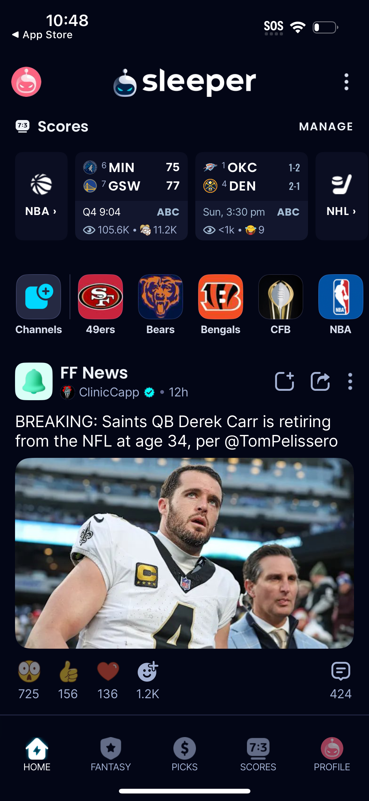
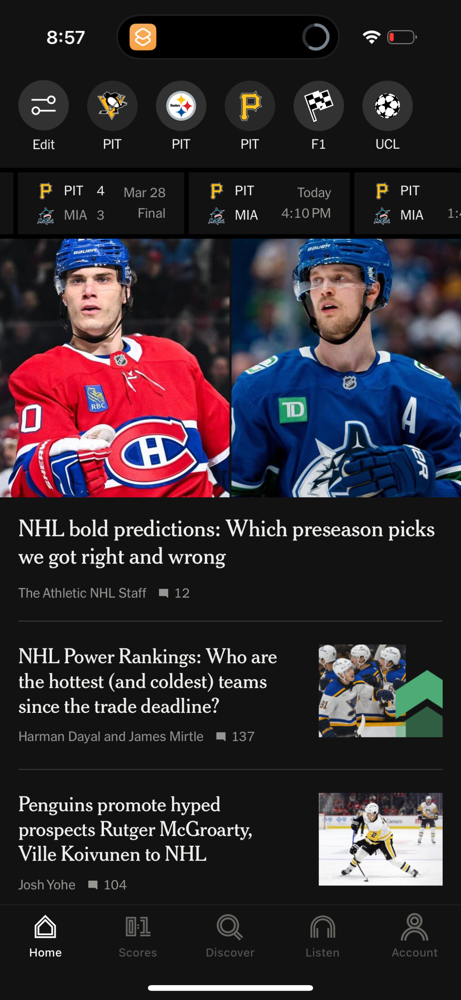
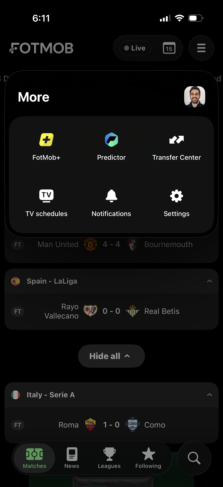
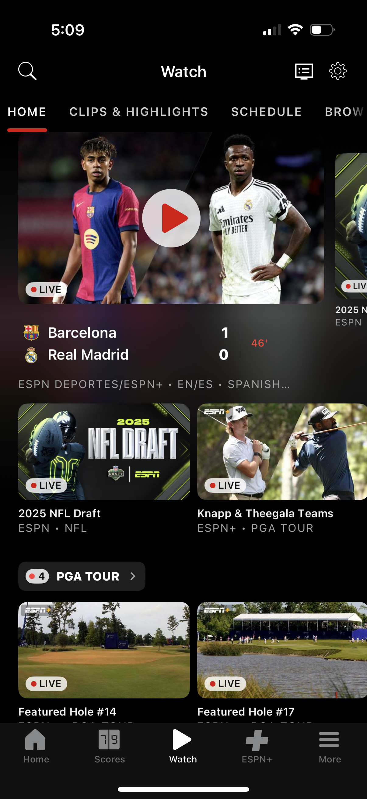
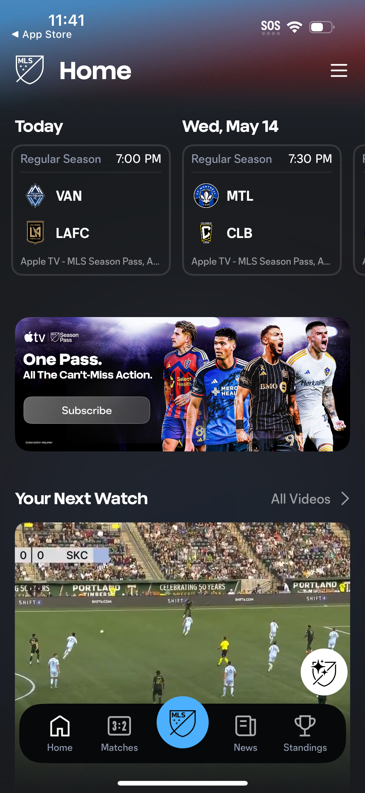
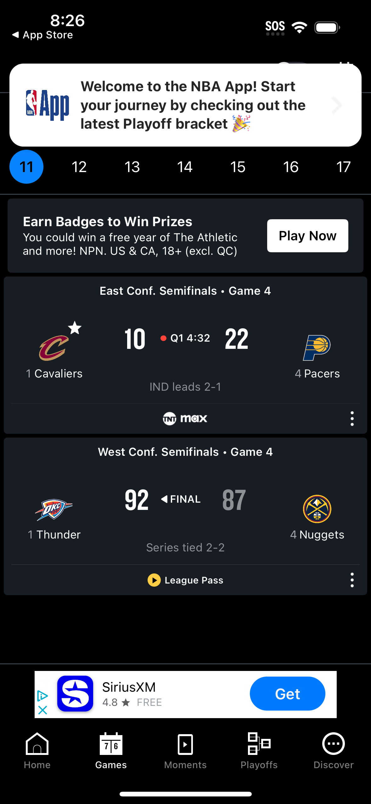
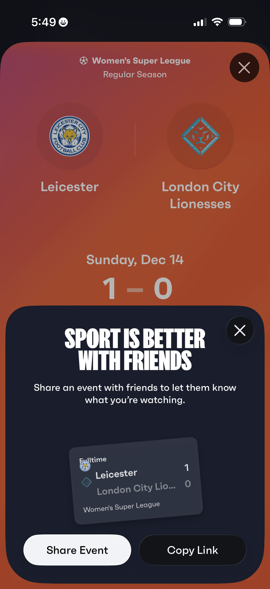
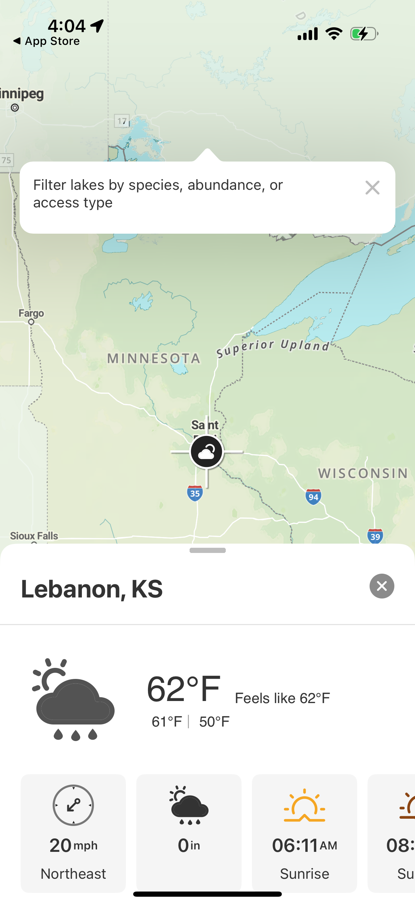

Design Research: Sports & Surfing App Home Screens
Conatus iOS · May 6, 2026 · Lazyweb + Domain Research
TL;DR
Sports apps have converged on a 3-layer home: live score strip → personalized feed → news/video, anchored by bold team branding. The differentiator is real-time feel — score cards with LIVE badges and broadcast links make users feel plugged in even before kickoff.
Surfing apps (Surfline, MSW, Carrot Surf) aren't in Lazyweb's DB at volume, so this section draws from adjacent outdoor/weather apps + category knowledge. The differentiator is go/no-go clarity — a single rating that tells a surfer in 2 seconds whether it's worth paddling out.
For Conatus: BestWindowCalculator + on-device AI summary is a rare advantage. Lead the home screen with that signal — not raw numbers.
🏆 Sports App Home Screen
Recommendations
Pinned teams strip as the first scroll-stop — horizontal chips at the top showing followed teams' next game time + score/status. Every top sports app does this.
Hero card for the most interesting live/upcoming match — full-width, team logos, start time with countdown, broadcast info.
News feed below the fold — large hero images, author + comment count, filtered to followed sports. Users scan images, not headlines first.
No empty states — if no games today, show yesterday's results or tomorrow's schedule. Always keep the screen alive.
Bottom nav: 5 items max — Home, Scores, Watch/Video, My Teams, More.
Apple News — Sports Home
"All Sports" filter, horizontal score card strip (live/final), then "Top Stories" feed. The gold standard 3-layer structure.
Lazyweb

Sleeper — Sports Community
Live game score cards at top, social fantasy feed below with reactions, comments, shares. Scores + community in one scroll.
Lazyweb

The Athletic — Home Feed
Team strip for quick scores, then full-bleed hero image story cards. Premium journalism-first approach with score access always reachable.
Lazyweb

Fotmob — Fixtures Home
Matches grouped by league, date navigation strip, LIVE badge, expandable league sections. Best-in-class fixture density.
Lazyweb

ESPN — Scores Screen
Match card with teams, live status, score, and TV/streaming provider badge. "Watch" CTA integrated directly into the card.
Lazyweb

MLS — Home Dashboard
Upcoming match schedule cards → streaming subscription promo → "Your Next Watch" video section. Layered hierarchy from data to media.
Lazyweb

NBA — Live Scores Tab
Live and completed matchup cards, team logos, score, quarter/time, series context, broadcast links. Spoiler toggle is a nice touch.
Lazyweb

Fixtured — Schedule Home
Day-by-day fixture timeline. Shows score cards for finished games and a "next game" card when today is quiet. Never goes blank.
Lazyweb
Sports Home Patterns
Live score strip at top
Team/league filter chips
Full-bleed news images
LIVE badge + red dot
5-item bottom nav
Dark mode first
Broadcast link on score card
Comment count on articles
Sports Anti-Patterns
Walls of plain-text scores
Login wall before any content
Hamburger for core sport nav
Casino/betting banners as hero
Blank empty states
🌊 Surfing App Home Screen
Recommendations for Conatus
Lead with the go/no-go verdict — a prominent rating badge (★★★ or EPIC / GOOD / POOR) before any raw numbers. BestWindowCalculator already produces this — surface it as the hero element.
AI summary as the subtitle — 1–2 lines of on-device AI narrative ("2–3ft clean peaks, offshore winds until noon") directly under the rating. Users read this before they look at charts.
Best window callout chip — a time-chip ("Best: 7am – 10am") in the hero card, not buried in a scroll. This is Conatus's unique differentiator vs generic weather apps.
Hourly forecast strip below — wave height bars, wind direction arrows, tide state markers. The Weather Channel home shows the right pattern for hourly strips.
Multi-spot switcher at top — horizontal chips for pinned spots. One tap to switch spots without leaving the home screen.
Nearby spots list with quality chips — shows 2–3 closest spots with their rating. Encourages exploration and builds the "local surf guide" feeling.
Night Sky — Conditions Card
"Stargazing Conditions" card with quality score, temp, cloud cover, and a link to expand. This is the exact pattern Conatus needs for a surf quality hero card: one card, one verdict, one tap.
Lazyweb

onX Fish — Outdoor Weather Sheet
Map-based outdoor app with a collapsible bottom sheet showing conditions (temp, wind, precipitation, sunrise/sunset) for the selected spot. A great model for Conatus's spot-detail layer.
Lazyweb
Surfing App Patterns (Domain Knowledge)
Single quality rating as hero
AI/plain-English conditions summary
Best window time callout
Hourly wave + wind chart
Tide markers on hourly strip
Spot switcher at top
Data freshness timestamp
Nearby spots with rating chips
Surfing Anti-Patterns
Leading with raw numbers (4.2ft @ 14s)
One-size-fits-all conditions (ignore persona)
7-day forecasts (surfers don't trust)
Generic weather app layout for surf
No go/no-go verdict — just data
Unique Angles Worth Stealing
Sleeper's social layer on scores — community reactions injected directly into the score feed. If Conatus ever adds session sharing, this is the template.
Night Sky's Conditions Card — one number, one sentence, one tap. Directly applicable to Conatus surf quality hero.
Fixtured's "clear day" card — never shows a blank state. Conatus home should show "flat today, looking good Thursday" when there's nothing to surf.
The Athletic's team strip + score hover — tapping a team chip shows a mini scorecard without navigating away. For Conatus: tapping a spot chip could show a mini conditions popover.
NBA's spoiler toggle — "Hide Scores" for people who want to watch later. Conatus could offer "surf alert" toggle: only notify me when it's ★★★ or better.
Key Note on Lazyweb Coverage
Lazyweb has strong coverage of mainstream sports apps (ESPN, NBA, MLS, Sleeper, The Athletic, Fotmob) but zero dedicated surf forecasting apps (Surfline, Magic Seaweed, Carrot Surf) at research time. Surf-specific UI patterns are inferred from adjacent outdoor apps + domain knowledge. When implementing Conatus home, consider uploading Surfline/MSW screenshots to Lazyweb for future research sessions.